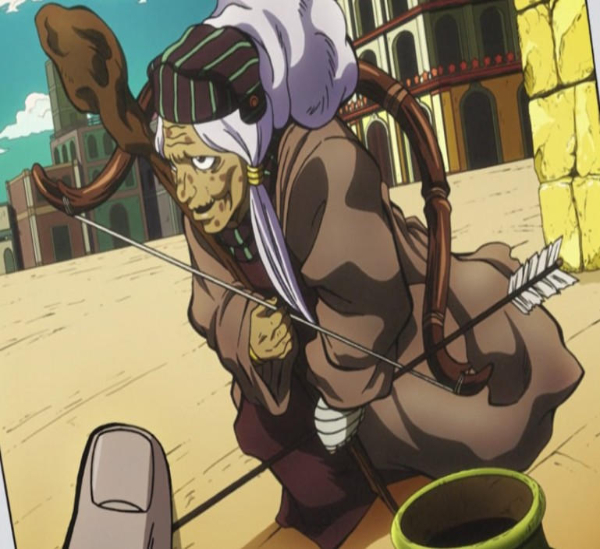

The Birth of Stands
This all started approximately 50,000 years ago, a meteorite crash-landed on Earth in an underpopulated region of what is known as Cape York, Greenland but in these rocks it was uncovered an unknown virus within the rocks of the surrounding area which was discovered in 1978 a mineral excavation team had found them.

Despite the amount of research, the virus in which this meteorite coontained was an alien virus which would be elimination of human life or so they thought. Those exposed to the virus and survived, granted them supernatural abilities that was something from a fairy tale.
The creation of Arrows

Althought it was discovered in 1978 but this wasn't the first time in history this mysterious virus was discoved. It was found by a man several hundred years ago. He took the rocks and turned them into Arrowheads. If you were pierced by the arrow heads, you will be able to unlock Stand abilities but only in those who had the potential to awaken one. These arrows will come back into play in the hundreds of years to come.
The discovery of the Arrows

The Arrowheads had disappered for many hundred of years until 1986...an Egyptian ruins investigation team but among them was a young man name Diavolo which will be more importannce in later time. He uncovered the six of the arrowheads and stolen by Diavolo who later sold them to Enya the Hag.
Overtime the 6 arrows were eventually distributed between various people in the later future such as Keicho Nijimura, Yoshihiro Kira, and Polpo. The arrows will change the world for better and the worst.
Stands
To an extent, a Stand embodies the individual's psyche, usually as the representation of their user's "fighting spirit". However, the will required to manifest a Stand doesn't need to be confrontational, deriving from any exploration of the mind's possibilities, be it mastery of a craft, strong desire or even personal crises. Beyond that definition, Stands present themselves in a large variety of forms and with different behaviors, if they are sentient at all. They follow a loose set of rules, with no definite standard by which one can fully classify them. As an embodiment of someone's psyche, Stands are therefore as varied as human minds can be. Due to their diversity, Stands are not made equal. Some can be incredibly powerful due to their user's outstanding grit, others can be highly situational because of a defining quirk of character, or even detrimental to their user if they do not have the necessary fighting spirit. This content comes from JoJo's Bizarre Encyclopedia, and must be attributed to its authors if you are using it on another wiki or web page, as specified in the license.
I found this definition better than anything I could have ever wrote, but the previous writing was not copied and pasted.